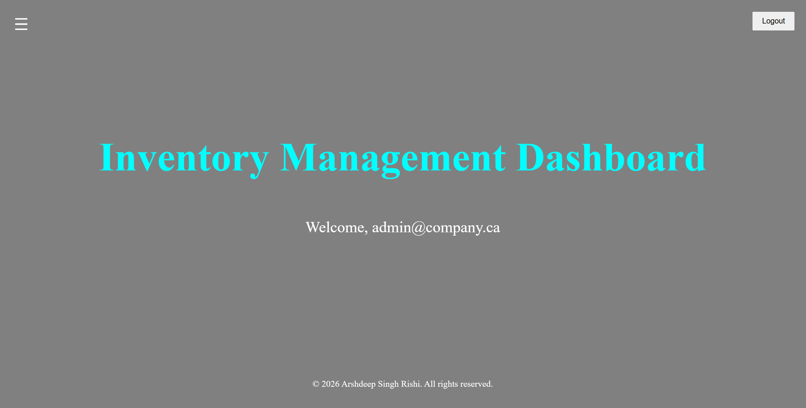
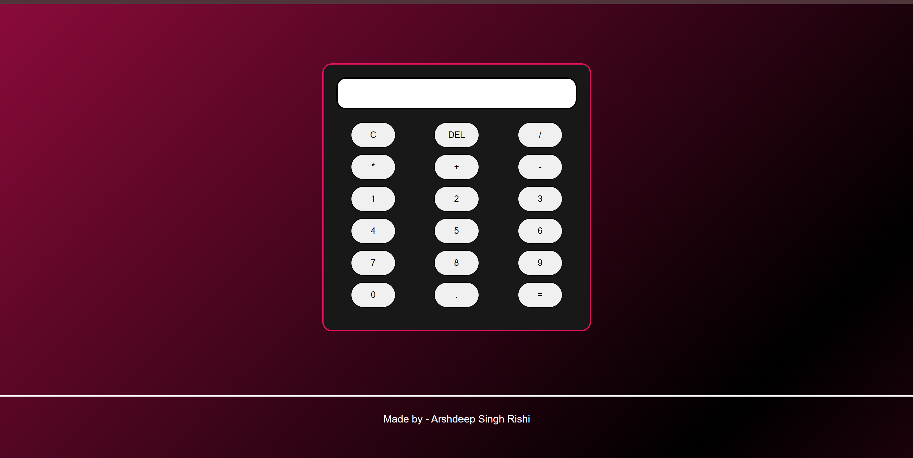
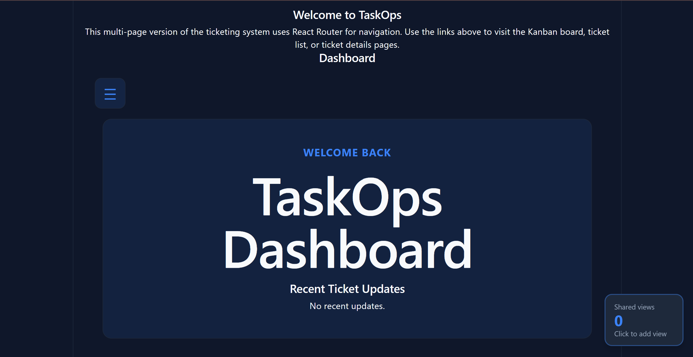

I'm a Software Development student passionate about building practical, user-friendly applications and continuously expanding my skills in modern technologies. I enjoy turning ideas into functional solutions, from designing intuitive interfaces to developing full-stack applications. Through my projects, I've gained hands-on experience with both frontend and backend development while improving my problem-solving and debugging skills. I'm always eager to learn new technologies, take on new challenges, and grow as a developer. Feel free to explore some of my projects below!

View this project
A full-stack inventory management application designed to help users efficiently manage products, suppliers, and inventory transactions.
The system includes secure user authentication, product and supplier management, inventory tracking, and transaction history. I developed
the frontend using React and TypeScript and built a RESTful backend using Node.js, Express, and TypeScript. The application uses Firebase for authentication and is deployed on Vercel.
Use these credentials to log in to the application:
Username - admin@company.ca
Password - password123
The Classy Calculator is a responsive web-based calculator designed with a sleek and elegant color palette, which inspired its name. Built using HTML, CSS, and JavaScript, it performs essential arithmetic operations through a simple and user-friendly interface. The project helped me strengthen my understanding of JavaScript event handling, DOM manipulation, and responsive interface design.

View this project
View this projectTaskOps is a task management application designed to help users organize, track, and manage their tasks efficiently. It provides a simple and intuitive interface for creating, updating, and managing tasks while keeping important information organized in one place. Built using React, TypeScript, Node.js, Express, and REST APIs, the project was developed in an Agile environment using sprints to plan, develop, test, and improve features incrementally. This project strengthened my experience with full-stack development, CRUD operations, teamwork, and Agile software development practices.